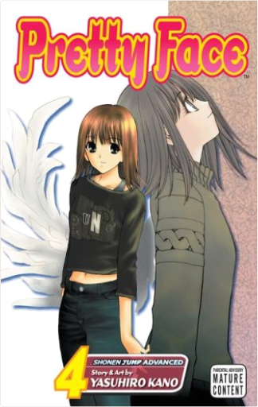
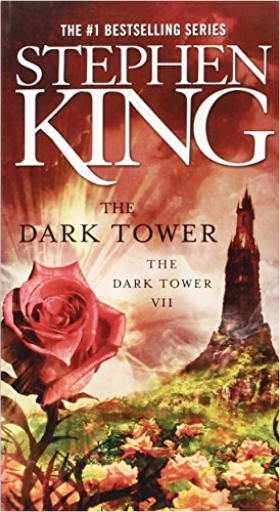
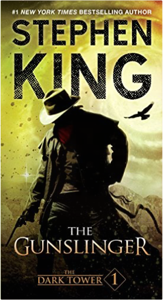
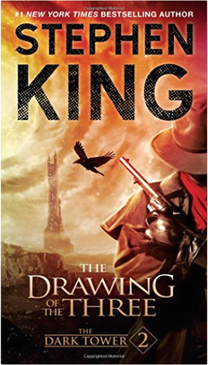
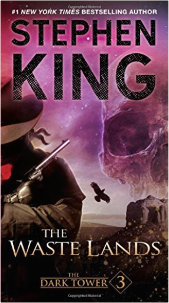
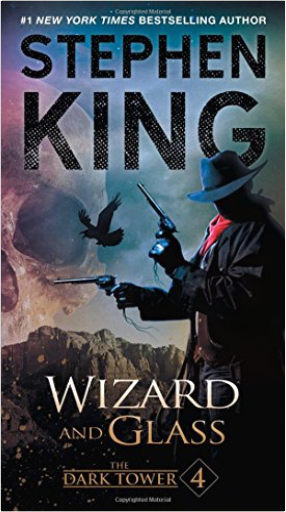

Pretty Face, Vol. 1Yasuhiro Kano He wanted to be her boyfriend...
He'll settle for being her twin sister!
When his school bus crashes, teenage karate star Rando is sent into a coma. A year later he wakes up to find that his disfigured face has been reconstructed in the image of his secret crush, Rina! Not knowing what Rando originally looked like, the mad plastic surgeon Dr. Manabe used a photo in Rando's pocket as the model for his reconstructive surgery. Abandoned by his friends and parents, the all-new Rando is mistaken for his would-be girlfriend's long-lost twin sister and adopted into her family. Can he put aside his feelings and be a good "big sister" to Rina...when he's still a teenage boy from the waist down? Pretty Face, Vol. 2Yasuhiro Kano Rando struggles to be a good "big sister" to Rina as fate conspires to put him in one disastrous situation after another. When pants start coming off, and half-naked women start crawling all over him for the thinnest of reasons, Rando must use all his karate wiles to avoid being exposed as a complete weirdo. Meanwhile, will the mad Dr. Manabe succeed in his plan to remove the last remnants of Rando's manhood...or will Rando remove Dr. Manabe's brains with his fist? Pretty Face, Vol. 3Yasuhiro Kano After a bus accident leaves him terribly disfigured by extensive burns, Rando Masashi discovers that his plastic surgeon, in reconstructing his face, used the snapshot of Rina Kurimi, the girl he has a crush on.  Pretty Face, Vol. 4Yasuhiro Kano After a bus accident leaves him terribly disfigured by extensive burns, Rando Masashi discovers that his plastic surgeon, in reconstructing his face, used the snapshot of Rina Kurimi, the girl he has a crush on. Pretty Face, Vol. 5Yasuhiro Kano After a horrific bus accident that left him comatose, Rando Masashi's face is left terribly disfigured by extensive burns, but when genius plastic surgeon Dr. Manabe works on his face and makes remarkable progress over the course of a year, Rando wakes up from his coma and realizes that the photo the doctor used was a snapshot of Rina Kurimi, the girl whom Rando has a crush on. Pretty Face, Vol. 6Yasuhiro Kano • Pre-existing fan websites in North America.
• Foreign licenses in France, Taiwan and Korea.
Rando Masashi, a self-centered, brash karate star, was the victim of a horrific bus accident that left him comatose, his face terribly disfigured by extensive burns. Genius plastic surgeon Dr. Manabe saved Rando's life and went to work on his face, gradually reconstructing it based on a photograph found in the wreckage of the bus. When Rando wakes up from his coma, a year has passed, and Dr. Manabe has made remarkable progress. But in a cruel twist of fate, the photo that the doctor used as his reference was not a picture of Rando, but of Rina Kurimi, the girl whom Rando has a crush on!
The war is on for Rando's affections when Natsuo and Nozomi finally meet! Which of the class's toughest girls will have their way with our not-quite-male, not-quite-shemale hero? Then, Rando finally meets the person whose face he's been wearing all this time: Rina's real twin sister! Will the return of Yuna spell the end of Rando's womanhood...and when the bandages come off, will his chances with Rina be over? The Writer's Digest Character Naming SourcebookSherrilyn Kenyon The Ultimate Guide to Choosing Character Names
The Writer's Digest Character Naming Sourcebook is a one-of-a-kind resource specifically designed with the writer in mind. Inside you'll find: 25,000+ first names and surnames, and their meanings, listed by originNames and surnames from more than 45 countriesA reverse lookup of names by meaningAn alphabetical index of namesAn explanation of naming practices and historical context for each originA list of the top ten most popular names in the United States every year from 1880-2003Instruction on how to create believable names that fit your characters and your story
This comprehensive guide also includes advice from a number of best-selling authors, including Elizabeth George, Alexander McCall Smith, Homer Hickam, Marian Keyes, Big Fish author Daniel Wallace, and others. You'll get the inside scoop on their naming methods, plus the stories behind the names of their most famous characters.
So throw out your old telephone books and baby-naming guides—The Writer's Digest Character Naming Sourcebook meets all your naming needs! | What is a Jew?Morris N. Kertzer With over 400,000 copies sold, What Is a Jew? is the classic guide that answers 100 of the most commonly asked questions about Jewish life and customs.
Completely revised and reorganized, this guide to the traditions, beliefs, and practices of Judaism—for both Jews and non-Jews—tackles a wide range of subjects in a question-and-answer format. Ideal for conversion students, interfaith couples, and congregants seeking answers to essential day-to-day issues.  The Dark TowerStephen King Soon to be a major motion picture starring Matthew McConaughey and Idris Elba
Creating "true narrative magic" (The Washington Post) at every revelatory turn, Stephen King surpasses all expectation in the stunning final volume of his seven-part epic masterwork. Entwining stories and worlds from a vast and complex canvas, here is the conclusion readers have long awaited—breathtakingly imaginative, boldly visionary, and wholly entertaining.
Roland Deschain and his ka-tet have journeyed together and apart, scattered far and wide across multilayered worlds of wheres and whens. The destinies of Roland, Susannah, Jake, Father Callahan, Oy, and Eddie are bound in the Dark Tower itself, which now pulls them ever closer to their own endings and beginnings...and into a maelstrom of emotion, violence, and discovery.  The Dark Tower I: The GunslingerStephen King Soon to be a major motion picture starring Matthew McConaughey and Idris Elba
“An impressive work of mythic magnitude that may turn out to be Stephen King’s greatest literary achievement” (The Atlanta Journal-Constitution), The Gunslinger is the first volume in the epic Dark Tower Series.
A #1 national bestseller, The Gunslinger introduces readers to one of Stephen King’s most powerful creations, Roland of Gilead: The Last Gunslinger. He is a haunting figure, a loner on a spellbinding journey into good and evil. In his desolate world, which mirrors our own in frightening ways, Roland tracks The Man in Black, encounters an enticing woman named Alice, and begins a friendship with the boy from New York named Jake.
Inspired in part by the Robert Browning narrative poem, “Childe Roland to the Dark Tower Came,” The Gunslinger is “a compelling whirlpool of a story that draws one irretrievable to its center” (Milwaukee Sentinel). It is “brilliant and fresh…and will leave you panting for more” (Booklist).  The Dark Tower II: The Drawing of the ThreeStephen King Soon to be a major motion picture starring Matthew McConaughey and Idris Elba
The second volume in Stephen King’s #1 bestselling Dark Tower Series, The Drawing of the Three is an “epic in the making” (Kirkus Reviews) about a savage struggle against underworld evil and otherworldly enemies.
“Stephen King is a master at creating living, breathing, believable characters,” hails The Baltimore Sun. Beginning just less than seven hours after The Gunslinger ends, in the second installment to the thrilling Dark Tower Series, Roland encounters three mysterious doorways on a deserted beach along the Western Sea. Each one enters into a different person’s life in New York—here, he joins forces with the defiant young Eddie Dean, and with the beautiful, brilliant, and brave Odetta Holmes, to save the Dark Tower.
“This quest is one of King’s best…it communicates on a genuine, human level…but is rich in symbolism and allegory” (Columbus Sunday Dispatch). It is a science fiction odyssey that is unlike any tale that Stephen King has ever written.  The Dark Tower III: The Waste LandsStephen King Soon to be a major motion picture starring Matthew McConaughey and Idris Elba
The third volume in the #1 nationally bestselling Dark Tower Series, involving the enigmatic Roland (the last gunfighter) and his ongoing quest for the Dark Tower, is “Stephen King at his best” (School Library Journal).
Several months have passed since The Drawing of the Three, and in The Waste Lands, Roland’s two new tet-mates have become trained gunslingers. Eddie Dean has given up heroin, and Odetta’s two selves have joined, becoming the stronger and more balanced personality of Susannah Dean. But Roland altered ka by saving the life of Jake Chambers, a boy who—in Roland’s world—has already died. Now Roland and Jake exist in different worlds, but they are joined by the same madness: the paradox of double memories. Roland, Susannah, and Eddie must draw Jake into Mid-World and then follow the Path of the Beam all the way to the Dark Tower. There are new evils…new dangers to threaten Roland’s little band in the devastated city of Lud and the surrounding wastelands, as well as horrific confrontations with Blaine the Mono, the piratical Gasher, and the frightening Tick-Tock Man.
The Dark Tower Series continues to show Stephen King as a master of his craft. What lands, what peoples has he visited that are so unreachable to us except in the pages of his incredible books? Now Roland’s strange odyssey continues. The Waste Lands follows The Gunslinger and The Drawing of the Three as the third volume in what may be the most extraordinary and imaginative cycle of tales in the English language.  The Dark Tower IV: Wizard and GlassStephen King Soon to be a major motion picture starring Matthew McConaughey and Idris Elba
The fourth volume in the brilliant Dark Tower Series is “splendidly tense…rip-roaring” (Publishers Weekly)—a #1 national bestseller about an epic quest to save the universe.
In Wizard and Glass, Stephen King is “at his most ebullient…sweeping readers up in…swells of passion” (Publishers Weekly) as Roland the Gunslinger, Eddie, Susannah, and Jake survive Blaine the Mono’s final crash, only to find themselves stranded in an alternate version of Topeka, Kansas, that has been ravaged by the superflu virus. While following the deserted I-70 toward a distant glass palace, Roland recounts his tragic story about a seaside town called Hambry, where he fell in love with a girl named Susan Delgado, and where he and his old tet-mates Alain and Cuthbert battled the forces of John Farson, the harrier who—with a little help from a seeing sphere called Maerlyn’s Grapefruit—ignited Mid-World’s final war.
Filled with “blazing action” (Booklist), the fourth installment in the Dark Tower Series “whets the appetite for more” (Bangor Daily News). Wizard and Glass is a thrilling read from “the reigning King of American popular literature” (Los Angeles Daily News). |

 Made with Delicious Library
Made with Delicious Library